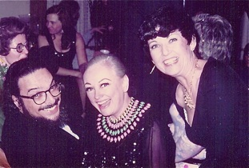

Eric Crozier, Nancy Evans, Ruth


Ruth, Ann Murray
Ruth, Mark Markham

Richard Hundley, Ruth
Byung-Soon Lee, Ruth
Leon Fleisher, Phyllis Diller, Ruth
Ruth, Leon Fleisher
Nelly Miricioiu, Ruth
Ruth, Jennifer O’Loughlin


Ruth, John Shirley-Quirk, Arno
Measha Brueggergosman, Ruth